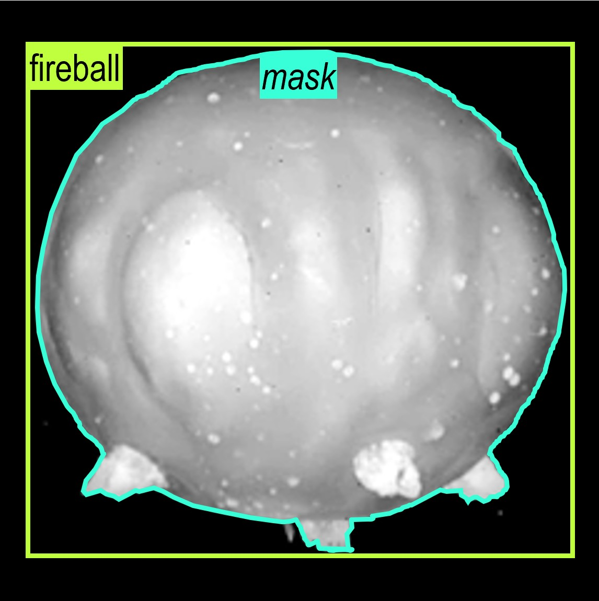

<div class="row flex-column-reverse flex-md-row py-2">
    <div class="col-md-9" id="bio">
        <h1>Feature extraction from nuclear test films</h1>
        <p style="text-align:center;font-weight:bold;">
            Joel Khristy, Haley Duba-Sullivan, Rocky Yoon, Pablo Moresco, Thomas Karnowski
            <br /> Oak Ridge National Laboratory
        </p>
        <p class="text-justify">
            Films from the US's nuclear testing era compose the only sizeable collection of imagery depicting high-yield detonations. These films offer unique insights into characteristics of flows involving scales that are difficult to replicate experimentally. In this R&D work, we implement modern computer vision and machine learning techniques to extract fluid dynamic phenomena of detonations from films digitized by Lawrence Livermore National Laboratory and compare them to reference values from historic reports. These measurements converted to real-world units provide valuable experimental data that can be used in the development and validation of blast dynamics, debris formation, and fallout transport models that may aid in informing nuclear forensic or emergency response activities.
        </p>
        <p style="text-align:center">
            <a href="https://www.ornl.gov/staff-profile/joel-j-khristy">ORNL Profile</a> &nbsp;/&nbsp;
            <a target="_blank" href="mailto:khristyjj@ornl.gov">Email</a>
        </p>
    </div>
    <div class="col-md-3" style="z-index:4;">
        
    </div>
</div>

{% include publications.html %}